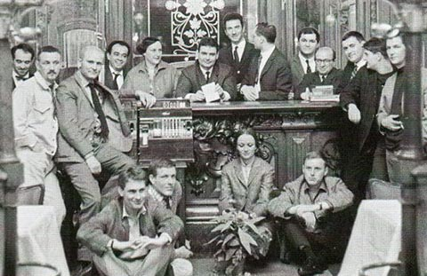

Détourner l'image publicitaire en la rendant asburde et hostile
Bien que la Figuration narrative ne se soit jamais proclamée comme un mouvement — contrairement au Nouveau Réalisme, qui lui est de peu son aîné —, le moment-clé de son émergence est l’exposition Mythologies quotidiennes (titre emprunté à l’ouvrage de Roland Barthes). Présentée en juillet 1964 au Musée d’art moderne de la Ville de Paris, cette manifestation est organisée par le critique d’art Gérald Gassiot-Talabot et les peintres Bernard Rancillac et Hervé Télémaque en réaction au triomphe du Pop Art et de l’art américain qui envahissent la scène nationale et internationale artistique. Robert Rauschenberg, notamment, reçoit le Grand Prix de peinture de la Biennale de Venise.
